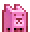

Doggies!
The night is dark and full of terrors, so tame the beasts before they attack.
Controls: Use the arrow keys to move left and right and to climb up and down ladders.
- Player Experience Goals: This is a fun-loving game that should bring a warm feeling to the player's heart, at least until night. At night the world changes and the cute pets become evil nightmares instilling fear and panic in the player.
- Genre: This game is a platformer with some horror elements, the sudden change of the AI's attitude towards the player.
- Game play: The objective of this game is to collect
bones to tame to the different dogs around the world. It takes
one bones to tame a dog and prevent it from attacking at night.
The world will shift from day to night changing how the dogs
behave. During the day the dogs are calm and do not hurt you.
At night the dogs turn vicious and deal damage to you so avoid
them at all costs. The days only lasts a short time so grab the
bone and tame the dogs.
To play this game use the arrow keys to move around and to climb up and down ladders. You cannot jump so use the ladders effectively.
If you die, you will lose all of your inventory and respawn at your original location. The world will not reset, however, so all of the dogs you tamed will not respawn. Ten new dogs will spawn throughout the map.
There are three different kinds of dogs:-
Ordinary -
 normal dog
that deals moderate damage and runs at a speed equal
to that of the player's
normal dog
that deals moderate damage and runs at a speed equal
to that of the player's
- Fast -  faster dog that deals little damage but runs at a speed exceeding the player's
-
Heavy -
 strong dog that
deals a staggering amount of damage but runs at a speed
equal to half of the player's
strong dog that
deals a staggering amount of damage but runs at a speed
equal to half of the player's
-
Ordinary -
- Prototype goal: This prototype is exploring the use of inconsistent AI and constantly changing world. This is meant to create a sense of panic in the player as the attempt to collect during the day and survive at night. This prototype also explores the use of varying types of enemies with different strengths and weaknesses.
- Features: The change in the world from day to night is an important and unique aspect of the game that changes how players play and how AI react.
- Setting/Premise: You are an adventurer and an armature dog trainer. You have ventured into the territory of a pack of deadly dogs that are influenced by the moon and become raged at night. You take it upon your self to cure their anger by feeding them tasty treats.
- Story: You are a dog trainer who has come to the wild lands to tame the wild night beasts.
- Target Audience: The target audience of this game is primarily fans of the platform genre, but this game is designed to appeal to many different people, as well. Fans of 8 or 16 bit games, and fans of classic console games will enjoy this game.
- Play time: The game time will vary depending on your skill level, but most novices die in the first 2 minutes.
- Strategies: The best strategy to use is to hide on the ladders at night to avoid losing health. Do not forget to get the bones though as they will help you in taming more beasts.
- Prototype Assets: Most of the assets are self created
except for the following:
- The player's sprite was borrowed from the Phaser Tutorial: Making your first Phaser game as well as some of the code and game play.
- Class definition for Dog adapted from the phaser example Tanks.
- The music tracks of this game are from Ozzed's album "8-Bit Empire." You can find their music here.
- Howl sound effect.
- Ouch sound provided by work2survive.
- Dog bark provided by work2survive.
- Prototype Closest Other Game: This game is inspired by classic Nintendo games for the NES and SNES. This game uses some code and assets from the Phaser tutorial "Tutorial: Making your first Phaser game" which can be found here.